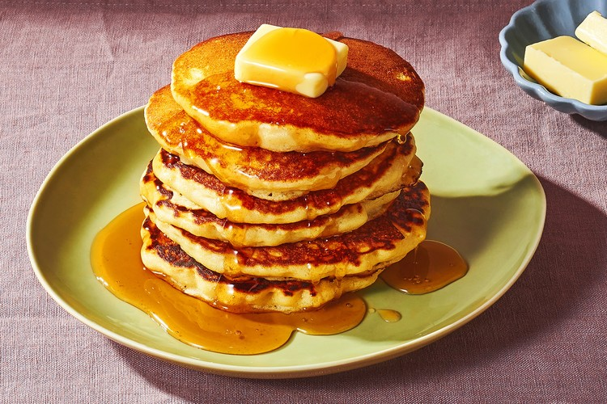

Pancake

Description
Nothing can beat this meal when it comes to breakfast. The sweet scent that penetrate throughout the air, the fuffiness of the dough, the flavourful syrup that oozes down like a waterfall - this meal doesn't just fill up your belly but give a a wonderfull recall of your happiest memory of you life.
Ingredients
- Flour
- Milk
- Eggs
- Vegetable oil
- Honey or Syrup
- Sweet Powder or Cream
Steps
- Put 200g of flour into a bow
- Pour milk into the bow while mixing it. Stop when the texture become thicker.
- Crack one eggs into the mixture and mix it
- Add some oil into the pan
- Pour one scoop of the pancake mixture into the pan using a soup landle
- Wait a few minutes until it become fluffy
- Flip it and wait one minute
- Take the pancake out, add honey or syrup on the top
- Spread some sweet powder or cream on top